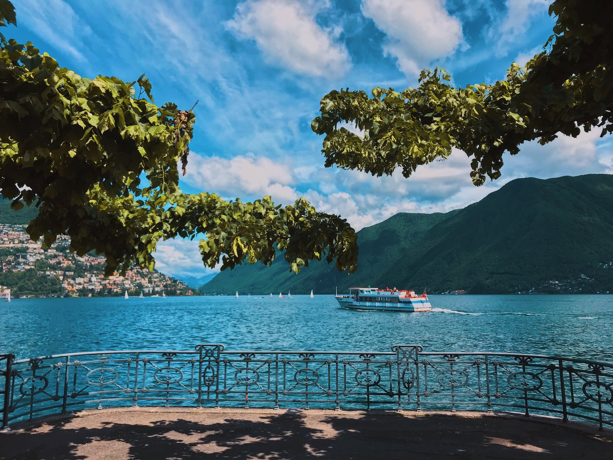

-

Trinidad
Esta pequeña república formada por dos islas ofrece una atractiva combinación de actividades en entornos naturales y vida cultural. La mayor de las dos islas es la alegre Trinidad, muy próxima a Venezuela. Su capital, Puerto España, goza de una animada vida nocturna. La carretera de la costa norte, llamada North Coast Road, invita a disfrutar de una exuberante vegetación y de paisajes espectaculares. En comparación, Tobago, a dos horas en transbordador, es un lugar tranquilo. Las azules aguas marinas contrastan con los rosas pálidos de la arena de las playas y los dorados de las puestas de sol. La selva tropical y los arrecifes de coral protegidos completan su atmósfera paradisíaca.
-

Jamaica
Jamaica es tierra de piratas y bucaneros, de luchas entre españoles y británicos, de colonos y de esclavizados, de playas con agua azul turquesa, de músicas con marcadas bases rítmicas y de sustancias con efectos embriagadores. De gente que está esperando que la conozcas para quitarte prejuicios de encima.
-

Barbados
Estamos en un país desconocido para muchos que emergió en un largo proceso de cientos de miles de años de un fondo coralino y que hoy, tras pasar por manos de españoles e ingleses, representa uno de los destinos más exóticos que se puede visitar en las Islas del Caribe como hemos hecho nosotros navegando estos días con el Zenith de Pullmantur. Y la pregunta es.. ¿cómo aprovechar al máximo la jornada en la isla? Te contamos aquello que ver en Barbados (y las mejores experiencias) tras nuestra aprovechada escala.
-

St Vincent
Es probable que el singular nombre de San Vicente y las Granadinas te lleve a asociarlo con un grupo de música antes que a un conjunto de islas que forman un país de las Antillas Menores del mar Caribe. No obstante, la última escala del crucero Zenith Pullmantur nos ha descubierto la esencia de lo que fue Youloumain, así llamada por los aborígenes antes de la llegada de los españoles, hoy emplazamiento de los mejores escenarios de la famosa película de Piratas del Caribe y una de las más hermosas jornadas de un fantástico recorrido
Magic Islands